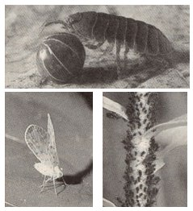

Here's a rundown on insects that have bugged my greenhouse. (In gener al, insect problems are worst in midwinter when I can't vent as much as I should.)
Whiteflies are notorious pests. For best control, trap them on yellow cards or boards coated with something sticky like Vaseline or Tanglefoot. (Whiteflies are attracted to the color yellow.) I buy Sticky Strips-gooey-surfaced pieces of plastic-from a greenhouse supplier and poke them into the soil around my plants.
When whiteflies badly infested my cucumber and Chinese cabbage vines, I achieved fairly good control by spraying them with Safer's insecticidal soap. (Other gardeners use Basic H or mild household soap.) Test the solution on a single plant first to be sure your crop isn't sensitive to it. Because whitefly eggs hatch 10 days after they're laid, apply the soap every 7 to 10 days for several weeks to control succeeding generations.
Phosphorus or magnesium soil deficiencies can promote whitefly infestations. Apply wood ashes or bonemeal to add phosphorus, and dolomite limestone for magnesium.
Aphids are less active than whiteflies, but just as damaging. They often attack plants dosed with too much nitrogen. If you overdo the manure tea, dig in some sawdust; as it rots, it'll absorb some of the excess N. (Don't use cedar, walnut, or redwood sawdust-these contain plant toxins.) Soap sprays kill aphids, but also harm beneficial insects. For a safer treatment, hose the soft-bodied pests off your plants. Immature ladybugs (you can buy them by mail) gorge on aphids. According to Doc Abraham, daddy longleg spiders eat aphids and other insect larvae.
Spider mites bother plants, such as ornamentals, that are shifted from house to greenhouse. Infested plants may have mottled foliage and a skimpy, delicate webbing among their leaves. Since the mites like a hot, dry climate, your best defense is to mist and ventilate the greenhouse. During severe infestations, try swabbing the leaves (undersides, too) with a half-and-half mixture of water and rubbing alcohol. Test it first, though, to be sure it won't harm your plants. To help prevent the problem, be sure to supply your soil with calcium (limestone or crushed eggshells will do the trick).
Pillbugs are among the most annoying uninvited residents. These small, grey, oval, many-legged, segmented crustaceans-which roll into a ball when disturbed-feed on plant debris and hide under boards and in crevices . . . to emerge when you're not looking and feed on roots and young seedlings. To prevent infestation, remove fallen leaves, plant flats, and other hiding places from the surface of the growing bed. I've also trapped pillbugs under potato pieces, apple peelings, and grapefruit and cantaloupe rinds.
Handpicking even a few pillbugs on a daily basis helps lower their numbers. I have no illusion that my greenhouse will ever be free of them (and they do help break down plant debris); I'll be satisfied if I can just keep them from destroying my seedlings. I often protect valuable new seedlings-like greenhouse cucumbers-by dusting around them with diatomaceous earth.
While pillbugs nibble on seedlings and young plants, another invader takes leaf pieces from older plants as well. If you spot such evidence-and a telltale trail of dried mucus-take a midnight safari into your greenhouse with a flashlight. I bet you'll find slugs, happy in all that damp lushness.
You can trap slugs as you do pillbugs, and also spread wood ashes or diatomaceous earth to irritate their soft bodies. But I just visit the greenhouse several hours after first dark, armed with a thick glove, a can, and a flashlight. If I handpick the slugs for 7 to 10 days, their numbers drop steadily. (My biggest haul was 50 in one raid!)
|
 Top: A pair of pesky pillbugs. Above left: The wicked whitefly. Above right: An army of aphids. |
|
|